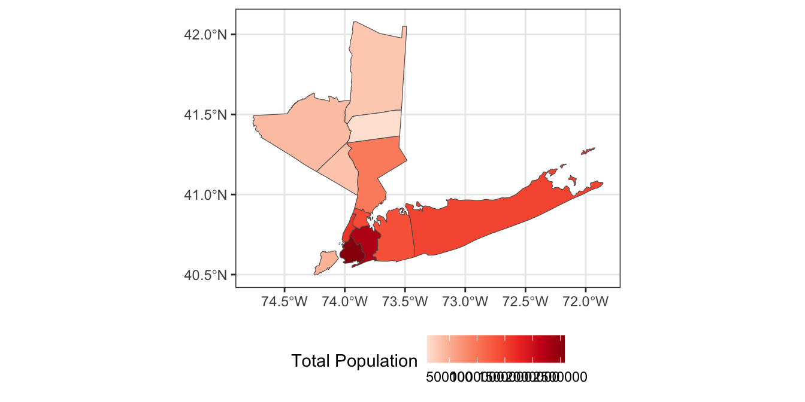
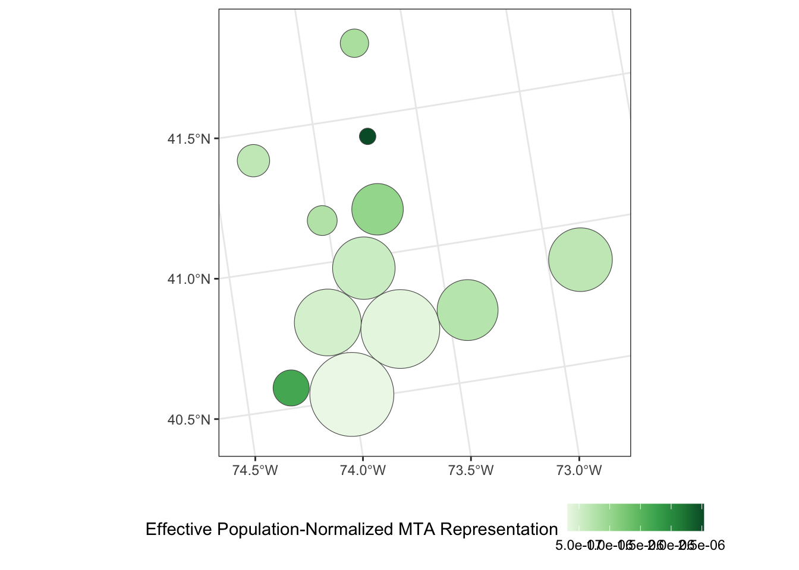

STA 9750 Lecture #8 In-Class Activity: More ggplot2 - Chloropleths and Cartograms + Tools for Interactive Data Analysis
Slides
Review Practice
Recall the SSA Birth Count Time Series from earlier in the semester.
You can load this data into R using the following code:
Recall that the columns here are:
-
id: The day in the entire time series (going up to \(\approx 365 * 20\) plus a few for leap days) -
day_of_year: the day in the year (1 to 365/366) -
day_of_week: the day of the week, coded as an integer -
day,month,year: the parts of the date as we normally think of them -
births: the number of births that day.
We are going to look for structure in this data using our data visualization tools.
- Compute the average number of babies born per day for each year. Is there evidence of a long term trend?
Solution
-
The previous plot may sacrifice too much resolution in taking yearly averages. Instead of using yearly averages, use a 90-day moving window to estimate the median number of children born each day.
Hint:
runmed
Solution
There are clearly several interesting trends at play in this data.
- Use
dplyrandggplot2to compute and visualize the average number of children born each day of the week. You can use a line graph or a bar graph to visualize your results:
Solution
- Use
dplyrandggplot2to compute and visualize the average number of children born per day for each month.
Solution
From this analysis, it seems clear that there are actually several different periodic and trend components to this data set. Extracting them is a fascinating analysis on its own but beyond this course. See, e.g., this page for details of how you might approach this.
Note that this type of ‘multi-seasonal’ decomposition is incredibly useful in business contexts. The prophet package, an open-source product of the data science teams at Meta is designed for precisely this sort of analysis.
Advanced ggplot2 Usage
Instructor’s Note: This week, I am providing non-interactive code snippets and encouraging you to run these examples locally (on your own instance of RStudio). Some of these tools rely on technologies you should have installed as part of this week’s pre-assignment, but that are a bit tricky to perfectly emulate in-browser.
Spatial Visualization with ggplot2
Today, we’re going to dive deeper into ggplot2, with a focus on visualizing spatial data. Spatial data can be quite complex, but we can get pretty far with the simple features (sf) paradigm. Also, if we focus on relatively small regions, we can avoid the complexities that come from Earth not being planar.
Key to this approach is a shapefile. A shapefile, conventionally stored with a shp extension, gives precise coordinates outlining spatial regions. By plotting a polygon with those points at its boundaries, we can visualize spatial regions.
The sf package includes a shp file for the counties of North Carolina:
Simple feature collection with 100 features and 14 fields
Geometry type: MULTIPOLYGON
Dimension: XY
Bounding box: xmin: -84.32385 ymin: 33.88199 xmax: -75.45698 ymax: 36.58965
Geodetic CRS: NAD27
# A tibble: 100 × 15
AREA PERIMETER CNTY_ CNTY_ID NAME FIPS FIPSNO CRESS_ID BIR74 SID74 NWBIR74
<dbl> <dbl> <dbl> <dbl> <chr> <chr> <dbl> <int> <dbl> <dbl> <dbl>
1 0.114 1.44 1825 1825 Ashe 37009 37009 5 1091 1 10
2 0.061 1.23 1827 1827 Alle… 37005 37005 3 487 0 10
3 0.143 1.63 1828 1828 Surry 37171 37171 86 3188 5 208
4 0.07 2.97 1831 1831 Curr… 37053 37053 27 508 1 123
5 0.153 2.21 1832 1832 Nort… 37131 37131 66 1421 9 1066
6 0.097 1.67 1833 1833 Hert… 37091 37091 46 1452 7 954
7 0.062 1.55 1834 1834 Camd… 37029 37029 15 286 0 115
8 0.091 1.28 1835 1835 Gates 37073 37073 37 420 0 254
9 0.118 1.42 1836 1836 Warr… 37185 37185 93 968 4 748
10 0.124 1.43 1837 1837 Stok… 37169 37169 85 1612 1 160
# ℹ 90 more rows
# ℹ 4 more variables: BIR79 <dbl>, SID79 <dbl>, NWBIR79 <dbl>,
# geometry <MULTIPOLYGON [°]>We represent this data in “tidy” format, with each row being a county. The “magic” is in the geometry column:
Simple feature collection with 100 features and 3 fields
Geometry type: MULTIPOLYGON
Dimension: XY
Bounding box: xmin: -84.32385 ymin: 33.88199 xmax: -75.45698 ymax: 36.58965
Geodetic CRS: NAD27
# A tibble: 100 × 4
NAME AREA PERIMETER geometry
<chr> <dbl> <dbl> <MULTIPOLYGON [°]>
1 Ashe 0.114 1.44 (((-81.47276 36.23436, -81.54084 36.27251, -81.5…
2 Alleghany 0.061 1.23 (((-81.23989 36.36536, -81.24069 36.37942, -81.2…
3 Surry 0.143 1.63 (((-80.45634 36.24256, -80.47639 36.25473, -80.5…
4 Currituck 0.07 2.97 (((-76.00897 36.3196, -76.01735 36.33773, -76.03…
5 Northampton 0.153 2.21 (((-77.21767 36.24098, -77.23461 36.2146, -77.29…
6 Hertford 0.097 1.67 (((-76.74506 36.23392, -76.98069 36.23024, -76.9…
7 Camden 0.062 1.55 (((-76.00897 36.3196, -75.95718 36.19377, -75.98…
8 Gates 0.091 1.28 (((-76.56251 36.34057, -76.60424 36.31498, -76.6…
9 Warren 0.118 1.42 (((-78.30876 36.26004, -78.28293 36.29188, -78.3…
10 Stokes 0.124 1.43 (((-80.02567 36.25023, -80.45301 36.25709, -80.4…
# ℹ 90 more rowsThe geometry column is of type MULTIPOLYGON, essentially a list of GPS coordinates tracing the corners of each county.
In this activity, we’ll mainly just use these for plotting, though it is possible to do quite sophisticated analyses here.
ggplot2’s geom_sf makes it easy to visualize spatial data. It has one required aesthetic, fittingly named geometry:
Note that ggplot2 is doing some work behind the scenes to keep the aspect ratio reasonable and not “stretching” North Carolina north-south.1
This is nice enough, if we like maps for maps’ sake, but we can do more. The BIR74 is the number of children born in that county between July 1, 1974 and June 30, 1978. We can use that to set the fills for each county.
This type of plot is called a chloropleth plot, coming from the Greek for “area-multitude”. It is commonly used to visualize areal2 geospatial data - that is quantities associated with spatial regions - as opposed to point data.
Building a chloropleth plot is not too hard, if you have an appropriate shape file. Thankfully, governments are in the business of knowing exactly what the boundaries of their territories are and providing shape files. Typically, these shape files are distributed in a “zip” format, with other geodata files that we won’t use in this course.
Adding Points on Chloropleths
We can add the City of Charlotte, the largest city of North Carolina on this map:
charlotte <- data.frame(
x = -80 - 50/60 - 35/60^2, # West = negative
y = +35 + 13/60 + 38/60^2 # North = positive
)
ggplot() +
geom_sf(data=nc,
aes(geometry = geometry,
fill = BIR74)) +
geom_point(data=charlotte,
aes(x=x, y=y),
color="red4")
Note that I pass different data sets and aes mappings to each layer here, so I do them inside the individual geom_s instead of in the global ggplot() call.
Exercises 1 - Geospatial Visualization of MTA Counties
Before completing the following exercises, run the following commands to download shape data and census demographics for 12 counties within New York State that are subject to the Metropolitan Commuter Transportation Mobility Tax:3
ACS_TABLES <- tribble(
~concept, ~id,
"total_population", "B01001_001",
"total_male_population", "B01001_002",
"total_female_population", "B01001_026",
"total_white_population", "B01001A_001",
"total_black_population", "B01001B_001",
"total_american_indian_population", "B01001C_001",
"total_asian_population", "B01001D_001",
"total_native_hawaiian_population", "B01001E_001",
"total_orther_race_population", "B01001F_001",
"total_two_or_more_population", "B01001G_001",
"total_hispanic_popoulation", "B01001I_001"
)
library(tidycensus)
options(tigris_use_cache = TRUE)
ACS_DATA <- ACS_TABLES |>
pull(id) |>
map(\(table_id) get_acs("county",
county=c("Queens",
"Kings",
"Bronx",
"New York",
"Richmond",
"Westchester",
"Rockland",
"Suffolk",
"Nassau",
"Dutchess",
"Putnam",
"Orange"),
state="NY", table_id, year=2020,
geometry=TRUE, cache_table=TRUE,
keep_geo_vars=TRUE)) |>
bind_rows() |>
select(NAME.y, ALAND, AWATER, variable, estimate, geometry) |>
rename(county = NAME.y,
land_area = ALAND,
water_area = AWATER,
value = estimate) |>
inner_join(ACS_TABLES, join_by(variable == id)) |>
select(-variable) |>
pivot_wider(names_from="concept",
values_from="value") |>
mutate(county = str_replace(county, ", New York", ", NY"))
glimpse(ACS_DATA)Rows: 12
Columns: 15
$ county <chr> "Queens County, NY", "Kings County, N…
$ land_area <dbl> 281594050, 179684485, 109224611, 1115…
$ water_area <dbl> 188444349, 71158757, 39362153, 179637…
$ geometry <MULTIPOLYGON [°]> MULTIPOLYGON (((-73.9626…
$ total_population <dbl> 2270976, 2576771, 1427056, 968738, 38…
$ total_male_population <dbl> 1102185, 1221038, 672484, 469087, 191…
$ total_female_population <dbl> 1168791, 1355733, 754572, 499651, 190…
$ total_white_population <dbl> 814353, 1103205, 306569, 598387, 2771…
$ total_black_population <dbl> 409975, 806746, 497301, 143210, 41795…
$ total_american_indian_population <dbl> 10641, 8688, 9539, 3482, 1442, 857, 4…
$ total_asian_population <dbl> 588875, 306741, 55362, 59474, 10930, …
$ total_native_hawaiian_population <dbl> 1150, 1434, 1786, 297, 318, 126, 526,…
$ total_orther_race_population <dbl> 311820, 228625, 459756, 113397, 29293…
$ total_two_or_more_population <dbl> 134162, 121332, 96743, 50491, 21178, …
$ total_hispanic_popoulation <dbl> 631657, 486272, 799765, 241442, 80256…Here, I have joined together the data in a fashion that should be easy to use for our visualization exercises.
- Using
ACS_DATA, create a simple map of the 11 MTA Commuter counties.
- Using the
fillaesthetic, create a legend with the name of each county:
Solution

With a bit of polish, we may instead present this as:
-
Using the
total_populationcolumn, color the counties by population instead.Hint: What type of color palette do you want to use here?
Solution

This can be refined as:
-
Because NYS loves complex governance structures, the MTA has a 21-member board wherein:
- 5 members are appointed by the Governor of NYS
- 4 members are appointed by the Mayor of NYC
- 3 members are appointed by the Executives of Nassau, Suffolk, and Westchester Counties (one per county)
- 4 members are appointed by the Executives of Dutchess, Orange, Rockland and Putnam counties, but they share a single vote
- The remaining members are appointed by a mixture of customer and labor representatives
If we focus on the 11 members appointed by county and city leadership, we can add the following column to
ACS_DATA:
Modify your map to color each county by its effective representation on the MTA board.
Solution
- Under the “one person, one vote”-principle,4 we would expect county representation on the MTA board to be proportional to the number of residents of each county. Divide the effective votes of each county by the total population of that county to get a measure of representative effectiveness and visualize your results.
Solution
ACS_DATA |>
mutate(voter_power = effective_mta_vote / total_population) |>
ggplot(aes(geometry=geometry, fill=voter_power)) +
geom_sf() +
theme_bw() +
scale_fill_distiller(name="Effective Population-Normalized MTA Representation",
type="seq",
palette="Greens",
direction=1) + # Flip direction of legend
theme(legend.position="bottom")
-
While this map is interesting, it is more interpretable to instead identify which counties have relatively too-much or too-little voting power on the MTA board. Compute a “baseline” measure of voter power by dividing the 8 total local MTA votes by the total population of the 12-county region. Then divide each county’s voter power by this baseline to get a sense of its relative power. Visualize your result using a suitable color palette.
*Hint: You may want to subtract 1 from your
Solution
ACS_DATA |>
mutate(county_voter_power = effective_mta_vote / total_population,
baseline_voter_power = sum(effective_mta_vote) / sum(total_population),
relative_voter_power = county_voter_power / baseline_voter_power -1) |>
ggplot(aes(geometry=geometry, fill=relative_voter_power)) +
geom_sf() +
theme_bw() +
scale_fill_fermenter(name="Relative Representation on the MTA Board [Red Regions and Over-Powered]",
type="div",
palette="RdBu",
breaks=c(-3, -1.5, 0, 1.5, 3)) +
theme(legend.position="bottom",
legend.text = element_blank()) # Disable legend ticksBased on this analysis, which county’s residents have the most relative power on on the MTA board? Which have the least?
Note that this analysis is somewhat limited as it assumes NYC’s four votes are equally split by borough. In practice, the interests of the larger boroughs may be more strongly represented among mayoral appointees.
Limitations and Extensions of Chloropleths
Chloropleth plots are rightly popular but they have a major limitation: humans are not uniformly distributed across space! Smaller regions may have higher populations (cf Connecticut vs Montana) and administrative regions are not the same size. Because human perception is naturally drawn to larger regions, we often need to adjust the color schemes used to compensate for area effects. This process can be powerful, but it is a bit difficult to get right.
For instance, let’s see what happens if we create a chloropleth of the SID74 data, the number of children who die in North Carolina of SIDS during our sample period:

Here, Mecklenberg County (Charlotte; bottom-middle of the state) sticks out because it has a large population, not because SIDS was particularly more common in that county. We can modify our plot to show the SIDS rate, rather than raw counts:
nc |>
mutate(sids_rate_74 = SID74 / BIR74) |>
ggplot(aes(geometry = geometry,
fill = sids_rate_74)) +
geom_sf()We see less variation here, but there is still some. Note that this type of data – rate estimation from rare counts – can be pretty tricky to analyze, (and thankfully SIDS remains quite rare) but that’s not the primary focus of this class so we’ll leave it here.
This plot still isn’t perfect however: Sampson county is the largest county in NC, but it has a relatively small population. That means that the largest area - and hence the place our eyes will most immediately look - is assigned to a relatively unimportant county. Relatedly, Anson County is a county with a small population , but it appears to be a “hot-spot”. This could be true, but it is more likely a noise-effect resulting from a small population.
To address these issues, we can use a cartogram which will “adjust” the map so that area maps to a relevant quantity. This is quite complex mathematically, but the cartogram package handles it reasonably transparently for us5:
library(cartogram)
nc |>
mutate(sids_rate_74 = SID74 / BIR74) |>
st_transform(26916) |>
cartogram_cont(weight="BIR74") |>
ggplot(aes(geometry=geometry,
fill = sids_rate_74)) +
geom_sf()
Here the st_transform function species what projection to equilibrate area in. I’m not an expert on this, but the internet seems to suggest 26916 is not a bad default.
Looking at this plot, we see that counties are now adjusted to population, (or, more precisely, birth count) and that and Anson county-while still high-is clearly down-weighted in accordance with its population.
Exercises 2 - Cartogram Analysis of MTA Counties
- Modify your plot of the MTA counties so that each county is resized proportional to its total population.
Solution
library(cartogram)
ACS_DATA |>
st_transform(26916) |>
cartogram_cont(weight="total_population") |>
ggplot(aes(geometry=geometry,
fill = county)) +
geom_sf() +
scale_fill_brewer(name="County",
type="qual",
palette="Paired") +
theme(legend.position="bottom")- The result of the previous cartogram is a bit janky. Adapt your code to instead use a Dorling cartogram (
cartogram_dorling) which gives a more recognizable cartogram representation in some circumstances.
Solution
library(cartogram)
ACS_DATA |>
st_transform(26916) |>
cartogram_dorling(weight="total_population") |>
ggplot(aes(geometry=geometry,
fill = county)) +
geom_sf() +
scale_fill_brewer(name="County",
type="qual",
palette="Paired") +
theme(legend.position="bottom")
-
Apply a Dorling Cartogram to visualize effective population-adjusted MTA board representation of each county.
Is this graphic more or less interpretable than your previous attempt using true geometries? In particular, how does this visualization balance the relative overpowering of Putnam County with its smaller overall population? (That is, the residents of Putnam county may have more voting power per capita, but if there are very few of them, the net effect of this bias might not actually be that large.)
Solution
ACS_DATA |>
mutate(voter_power = effective_mta_vote / total_population) |>
st_transform(26916) |>
cartogram_dorling(weight="total_population") |>
ggplot(aes(geometry=geometry, fill=voter_power)) +
geom_sf() +
theme_bw() +
scale_fill_distiller(name="Effective Population-Normalized MTA Representation",
type="seq",
palette="Greens",
direction=1) + # Flip direction of legend
theme(legend.position="bottom")
shiny: Creating Interactive Tools for Data Analysis
We now turn our attention to creating interactive tools (web applications and dashboards) for data analysis. By learning these tools, you won’t necessarily enable yourself to do analysis, but you will enable colleagues and clients to more fully explore the results of your analyses. The main tool we will use to do is shiny, a reactive framework for R.
“Reactive” programming refers to an architecture that changes only in response to user input. You have almost certainly worked with a reactive piece of software in the form of Microsoft Excel (or Google Sheets or similar). The values in the spreadsheet do not change sua sponte, but when you make an input all related cells are updated. (Conceptually, all cells are updated, but Excel is smart and tracks only those cells that actually need to be updated.)
In this week’s pre-assignment, you have already read a bit about shiny, but now we will put it into practice. In this exercise, we will not focus on making things particularly attractive. If you want to improve upon the rather Spartan appearance of standard shiny, tools like the flexdashboard package may help.
Exercise 3 - Building a shiny tool for STA 9750
Use the course helper functions to build a shiny tool that can be used to verify that your mini-projects and peer feedback have been appropriately formatted and submitted.
Step 0: Run shiny
Take the following prototype and confirm that it runs on your computer. Note that this is the “single-file” format for shiny apps. It is somewhat more common to split shiny apps across two files - backend and frontend - but we are using a single file structure here for convenience.
if(!require("shiny")) install.packages("shiny")
library(shiny)
if(!require("glue")) install.packages("glue")
library(glue)
if(!require("yaml")) install.packages("yaml")
library(yaml)
# Create global variables here
variables <- read_yaml("https://raw.githubusercontent.com/michaelweylandt/STA9750/refs/heads/main/_variables.yml")
course_repo <- variables$course$repo
course_short <- variables$course$short
# Define the UI
ui <- bootstrapPage(
textInput('github_id',
'What is your GitHub ID?',
placeholder="Type your GitHub ID here"),
htmlOutput('gh_link')
)
# Define the server code
server <- function(input, output) {
output$gh_link <- renderText({
markdown(glue("My code for this course found on [GitHub](https://github.com/{input$github_id}/{course_repo})"))
})
}
# Return a Shiny app object
shinyApp(ui = ui, server = server)Step 1: Add a Link to your profile
Add a second output to link to the homepage you created in MP#00. Copying the treatment of gh_link in the example, you will need to
- Add a second output
renderTextcomponent in the server - Add a second output
htmlOutputcomponent in the UI
Step 2: Parameterize the Mini-Project Number
Next, extend your app to handle the mini-projects. Modify the above example to do three things:
Add a
numericInputthat takes a number between1and4inclusive to select a mini-project.-
Add an output
htmlOutputelement that adds a link to the relevant mini-project instructions.The
gluefunction can be used to easily substitute values in URLs (as in the example). Add an output
htmlOutputelement that adds a link to your mini-project submission. This URL should take both thenumericInputand thetextInputuser inputs to construct the URL. (That is, if you change theGitHubname used the URL should point to a different repo)
Step 3: Confirm Mini-Project Submission
Take one of the course helper scripts and use it to determine whether a given MP submission is properly formatted. To do so:
- Load the helpers by adding
source("https://michael-weylandt.com/STA9750/load_helpers.R")to the top of your file (outside both the UI and the server). - Add a reactive input that runs
mp_submission_verifyand captures the output. The following code snippet will be useful:
O <- capture.output({
E <- tryCatch(mp_submission_verify(N, github_id),
error=function(e) e)
})
if(isTRUE(E)){
MESSAGE <- "Mini-Project properly submitted."
} else {
MESSAGE <- "Mini-Project not properly submitted. Issue appears to be:\n"
MESSAGE <- paste(c(MESSAGE, O[1:2]), collapse="\n")
}where you use MESSAGE in creating your output.
Step 4: Extensions
Time allowing, do one or more of the following:
- Adapt
mp_feedback_locateto provide links to all peer feedback issues. Note that you will need to handle the case of later MPs, who haven’t been assigned yet (i.e., MPs #03 and #04). - Adapt
mp_feedback_verifyto check whether your peer feedback has been properly formatted. This will require a new input for the peer’s GitHub ID.
Exercise 4: Animated Graphics
In this section, you will use the gganimate extension to ggplot2 to create animated graphics. We will use the famous gapminder data set from the gapminder package. Install the gganimate, gapminder, gifski, and av packages before attempting attempting this set of exercises.
- For background, watch Hans Rosling’s talk on human prosperity.
-
Load the
gapminderpackage and create a static scatter plot of the relationship between GDP and Life Expectancy in the year 1952. Color points by continent and use the size aesthetic to represent population.Hint: You might want to put some quantities on a log-scale.
Solution
library(tidyverse)
library(gapminder)
library(gganimate)
gapminder |>
filter(year == 1952) |>
ggplot(aes(y=gdpPercap, x=lifeExp, size=pop, color=continent)) +
geom_point() +
theme_bw() +
ylab("GDP Per Capita (Inflation Adjusted US-Dollars") +
xlab("Life Expectancy at Birth (Years)") +
theme_bw() +
scale_y_log10(labels = scales::dollar) +
scale_color_brewer(name="Continent", type="qual", palette=2) +
scale_size_continuous(name="Population") +
theme(legend.position="bottom") +
ggtitle("Global GDP Per Capital and Life Expectancy in 1952")
- There is an outlier country in this data with very high GDP. What is it? Identify and remove it from your data set.
Solution
# A tibble: 1 × 6
country continent year lifeExp pop gdpPercap
<fct> <fct> <int> <dbl> <int> <dbl>
1 Kuwait Asia 1952 55.6 160000 108382.The outlier is Kuwait. Removing it from our data yields the following:
library(tidyverse)
library(gapminder)
library(gganimate)
gapminder |>
filter(year == 1952,
country != "Kuwait") |>
ggplot(aes(y=gdpPercap, x=lifeExp, size=pop, color=continent)) +
geom_point() +
theme_bw() +
ylab("GDP Per Capita (Inflation Adjusted US-Dollars") +
xlab("Life Expectancy at Birth (Years)") +
theme_bw() +
scale_y_log10(labels = scales::dollar) +
scale_color_brewer(name="Continent", type="qual", palette=2) +
scale_size_continuous(name="Population") +
theme(legend.position="bottom") +
ggtitle("Global GDP Per Capital and Life Expectancy in 1952")
which is a bit easier to read.
-
Load the
gganimatepackage and use it to create an animated version of this plot.A common use for animated plots is showing how data evolve over time and we will do the same here. Specifically, use the
transition_timefunction to make your plot animated. Thetransition_*functions ofgganimatework similarly to thefacet_*functionality of baseggplot2, but don’t require a~symbol in their specification.Hint: Since we are looking for changes over time, you do not need to
filterdown to 1952 any longer.
Solution
Making this an animated plot only requires us to change two lines:
library(tidyverse)
library(gapminder)
library(gganimate)
gapminder |>
filter(country != "Kuwait") |> # Don't filter to 1952 any more
ggplot(aes(y=gdpPercap, x=lifeExp, size=pop, color=continent)) +
geom_point() +
theme_bw() +
ylab("GDP Per Capita (Inflation Adjusted US-Dollars") +
xlab("Life Expectancy at Birth (Years)") +
theme_bw() +
scale_y_log10(labels = scales::dollar) +
scale_color_brewer(name="Continent", type="qual", palette=2) +
scale_size_continuous(name="Population") +
theme(legend.position="bottom") +
ggtitle("Global GDP Per Capital and Life Expectancy") +
transition_time(year)- Using the theme machinery, labels, etc. make this a “publication ready” plot. In particular, note that when using
transition_time()you can use{frame_time}in the title to get a dynamically changing year.
Solution
Because we already made our plot look nice earlier, the only thing left to do here is to tweak the label
library(tidyverse)
library(gapminder)
library(gganimate)
gapminder |>
filter(country != "Kuwait") |> # Don't filter to 1952 any more
ggplot(aes(y=gdpPercap, x=lifeExp, size=pop, color=continent)) +
geom_point() +
theme_bw() +
ylab("GDP Per Capita (Inflation Adjusted US-Dollars") +
xlab("Life Expectancy at Birth (Years)") +
theme_bw() +
scale_y_log10(labels = scales::dollar) +
scale_color_brewer(name="Continent", type="qual", palette=2) +
scale_size_continuous(name="Population") +
theme(legend.position="bottom") +
ggtitle("Global GDP Per Capital and Life Expectancy in {frame_time}") +
transition_time(year)-
To perfectly reproduce the visualization from the GapMinder video, let’s use Dr. Rosling’s preferred color scheme. The
gapminderpackage provides this data in a vector calledcountry_colors. Here we are providing our own color scale, so we will need to replace the defaultscale_color_discretewith a custom scale.Hint: There is an on-point example in the help page for ?country_colors.
Solution
Following ?country_colors:
library(gganimate)
library(gapminder)
library(ggplot2)
gapminder |>
ggplot(
aes(x=lifeExp, y=gdpPercap,
color=country, size=pop)) +
geom_point() +
scale_y_log10(labels=scales::dollar) +
scale_size_continuous(transform=scales::transform_log10()) +
guides(color="none",
size="none") +
xlab("Life Expectancy at Birth (Years)") +
ylab("GDP Per Capita (US$, Inflation-Adjusted)") +
theme_bw() +
transition_time(year) +
ggtitle("GDP vs Life Expectancy in {frame_time}") +
labs(caption="Data from the GapMinder Project") +
scale_color_manual(values=country_colors) +
facet_wrap(~continent)When you have a complex data set like this, I sometimes find it valuable to highlight a few key points to see how they evolve over time. The ggrepel package provides some nice functionality to add labels in a position that avoids covering over the underlying data:
library(gganimate)
library(gapminder)
library(ggrepel)
library(ggplot2)
gapminder |>
mutate(label = case_when(
country %in% c("United States", "China", "United Kingdom", "Kenya") ~ country,
TRUE ~ NA
)) |>
ggplot(
aes(x=lifeExp, y=gdpPercap,
color=country, size=pop,
label=label)) +
geom_point() +
geom_label_repel() +
scale_y_log10(labels=scales::dollar) +
scale_size_continuous(transform=scales::transform_log10()) +
guides(color="none",
size="none") +
xlab("Life Expectancy at Birth (Years)") +
ylab("GDP Per Capita (US$, Inflation-Adjusted)") +
theme_bw() +
transition_time(year) +
ggtitle("GDP vs Life Expectancy in {frame_time}") +
labs(caption="Data from the GapMinder Project") +
scale_color_manual(values=country_colors) +
facet_wrap(~continent)
A few more tweaks could be used here, but it’s pretty good.
Footnotes
-
The aspect ratio of a plot is the ratio of its height to its width. While we can change the aspect ratio pretty safely for most plot types, messing with the aspect ratio of a map leads to some weird visualizations. Unfortunately, to keep the aspect ratio correct,
ggplot2andquartowork to add some extra white space around a figure (see example below with default settings). If you want to cut off this white space and have a more professionally-formatted figure, you will need to adjust the figure width and height using thefig.widthandfig.heightexecution options. Rather than trying to tweak these both, you can also setfig.aspto manually set the aspect ratio. In this case, because NC runs about 2.5 degrees north-to-south and 8 degrees east-to-west, I have set the aspect ratio fo most of the figures in this set of notes to \(0.3 \approx 2.5/8\), which gives a comfortable appearance.ggplot(nc, aes(geometry = geometry)) + geom_sf() + ggtitle("Map of NC with Default Aspect Ratio and Margins")Look at all this wasted space!↩︎
The word “areal” is a homonym to the word “arial”, but don’t get them confused.↩︎
These are roughly the 12 counties served by the MTA (NYC Bus and Subway, MetroNorth, LIRR) and which capture most of the commuting population of NYC.↩︎
NYC’s baroque governance famously did not adhere to this principle until the Board of Estimate was struck down as a violation of the 14th Amendment in 1989. Other NYC and NYS structures continue this legacy of irregular representation to this day.↩︎
If you get an error reading “
stat_sf()requires the following missing aesthetics: geometry”, make sure you includegeometry=geometryin youraes↩︎